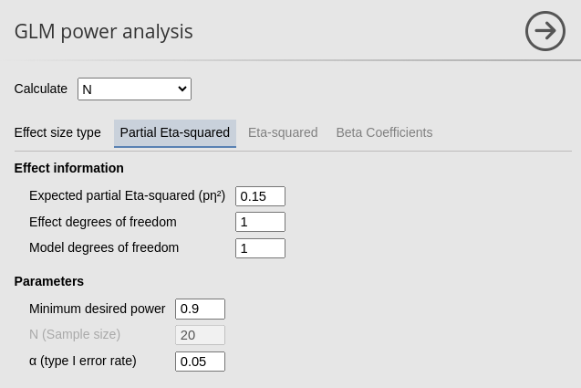
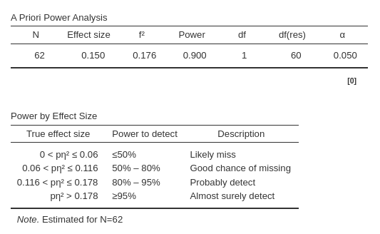
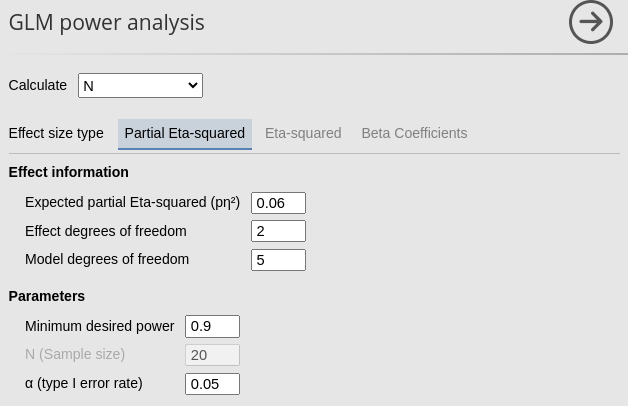
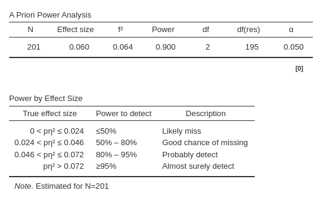
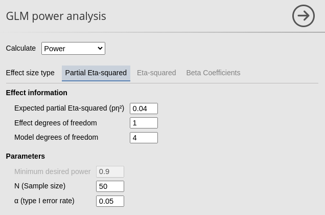
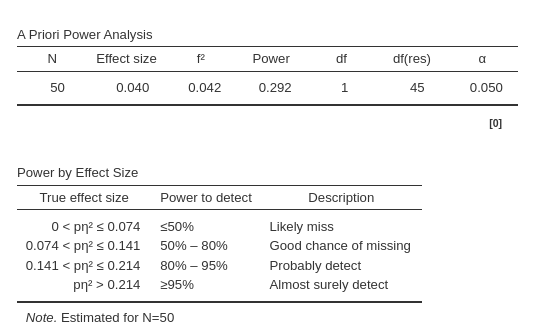
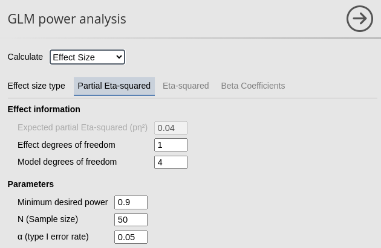
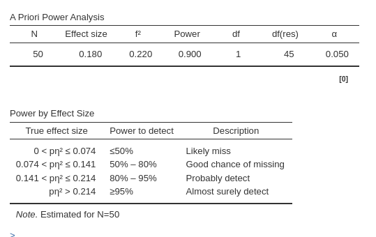
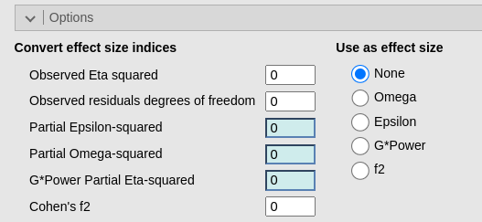

GLM based on partial Eta-Squared
0.2.0
The partial eta-squared \(p\eta^2\) is one of the most commonly used effect size index with the GLM. It is the ratio between the variance explained by an effect (\(\sigma_x^2\)) and the variance not explained by any other effect is the model (\(\sigma_x^2+\sigma^2\), where \(\sigma^2\) is the residual variance). Formally: \(\sigma_x^2/(\sigma_x^2+\sigma^2)\). It is usually reported in published papers and can be computed with any available statistical software.
Partial Eta-squared is used in power analysis for its close connection to the F-test. The F-test natural effect size is \(f^2\) (Cohen 1988), which can be computed as \(f^2=p\eta^2/(1-p\eta^2)\). The partial Eta-squared can be associated to continuous or categorical independent variables, or to any other term in the model, such as interactions or polynomial effects. The degrees of freedom ( df) associated with its test are always 1 for effects involving continuous variables, \(K-1\) for categorical variables with \(K\) levels (groups).
When we have our expected Partial Eta-squared (but see below for more details), we can use it to compute the other power parameters, depending on the aim of the analysis.
Aim: N (Required sample size)
When estimating the required sample size for planned research, we want to know what is the smallest sample that guarantees a significant result with probability equal to \(1-\beta=power\), given the expected effect size \(p\eta^2\). That is, the minimum N such that we achieve the desired power for a test of the expected effect size.
Regression
Let’s consider a scenario where we aim to estimate the required sample size (N) for a planned research project. Assuming we have a single continuous independent variable with an Expected Partial Eta-squared of 0.15 evaluated at α (type I error rate) = 0.05. We aim for a Minimum desired power of 0.90. Because the independent variable is continuous, its test will have 1 df. Because there is only one independent variable, the Model degrees of freedom will be 1 as well (see below for more about computing df in complex models).
We can simply input these parameters into PAMLj.
 
From the results table A priori power analysis we can
see that the required N is 62, so we need 62 cases to achieve a power of
.90 given an expected \(p\eta^2=.15\).
The table reports all power parameters, all but one are input by the
user, and the required one estimated by the module.
The second table we get is the Power by Effect Size
table, which informs us on the different power levels associated with
different possible effect sizes. Based on the estimate \(N=62\), we should expected a very low power
(\(1-\beta<.5\)) should the actual
population effect size be less than .06. A power of \(1-\beta<\) between .5 and .80 should the
expected effect size be between .06 and .116. A power between .80 and
.95 is to be expected if our population effect size is between .116 and
.178, whereas a power greater than .95 can be expected if the population
correlation is larger than .178.
ANOVA
Assume now we have a 2 X 3 design, and we are focusing on the interaction effect. Assume the expected Partial Eta-squared is .06. The interaction effect test has \((2-1)(3-1)=2\) degrees of freedom, whereas the overall model has \((3*2)-1=5\) df. We can plug these values in the interface and get the required N.
 
From the results table A priori power analysis we can
see that the required N is 201, so we need 201 cases to achieve a power
of .90 given an expected \(p\eta^2=.06\).
These results are identical to the ones one would obtain in R using
pwr package or employing G*Power.
See Rosetta: GLM required N for
validation.
Aim: Power (expected power)
Expected power analysis, sometimes called post-hoc power, aims at evaluating the likelihood of obtaining statistically significant results after conducting research, particularly when a pre-hoc (a priori) decision about the sample size cannot be performed. For instance, let’s consider a scenario where a research study involves 50 participants, with the focal effect of one continuous independent variable results in a Partial Eta-squared coefficient of 0.04. In the model there are other three continuous predictors. In this context, post-hoc power analysis assesses the probability of consistently obtaining significant results if the research were to be replicated multiple times, drawing from the same population a sample of 50 participants.
So, let’s fill in the field for Calculate: Power. The effect size is 0.04, N (Sample size) is 50. The effect df is 1, and the model df are 4, because there are four continuous predictors.
 
The expected power, calculated as \(1−\beta=.292\), indicates that it’s very unlikely to replicate the results when drawing from the same population and employing the same sample size.
Aim: Effect size (AKA another sensitivity analysis)
Estimating the effect size aims at finding minimum detectable effect size (MDES). It determines the minimum effect size that can be detected as significant with a specified probability (\(1-\beta=power\)), given the sample size at hand and the critical \(\alpha\). In essence, it is a post-hoc power analysis but may be used also in planning a research.
For instance, consider a situation where only a limited sample of 50 cases was collected due to constraints such as research topic, funding, or population size. In such cases, Calculate: Effect Size helps answering the question: What is the lowest effect size that would be detectable as significant with a certain probability (\(1-\beta=power\)) given the sample size (N=50)?
Imagine a research group knows they can only collected 50 cases. Their are going to estimate a multiple regression with 4 predictors. They wonder what will be the smallest effect size that would result as significant. Plugging the parameters into the input panel, we obtain the required results.
 
Results show that any Partial Eta-squared less than .180 will be tested with a power less than .90.
These results are identical to the ones one would obtain in R using
pwr package or employing G*Power.
See Rosetta: GLM posthoc power
for validation.
Adjusting the effect size.
When power analysis is based observed effect sizes taken from previous research or pilot studies, it is always a good idea to use an adjusted version of the indices. This because the indices of effect size based on variances are almost always up-ward biased (Richardson 2011). For the Partial Eta-squared there are two adjustments that can be carried out, yielding the Partial Omega-Squared and the Partial Epsilon-squared. The two are very similar, so any of the two would work fine.
PAMLj provides a method to convert the observed Partial Eta-squared into the adjusted effect size directly from the User Interface

Please see GLM options: converting effect size for details.
Sensitivity Analysis
Sensitivity analysis, exploring different plots of possible combinations of parameters, can be carried out like for any other PAMLj sub-modules. Please visit Sensitivity analysis page for more details.
Options
| Non-centrality Parameter (NCP) |
What type of non-centrality parameter (NCP) should be used. The effect
size is always transformed into a Cohen’s f2, that is
multiplied by the N to which is estimated based on the degrees of
freedom such that N=df+edf+1. Model-based
defines df as the model degrees of freedom. This is the
method used by G*Power software. Liberal uses
the effect df. Strict uses only the error df
(df=0).
|
Comments?
Got comments, issues or spotted a bug? Please open an issue on PAMLj at github or send me an email